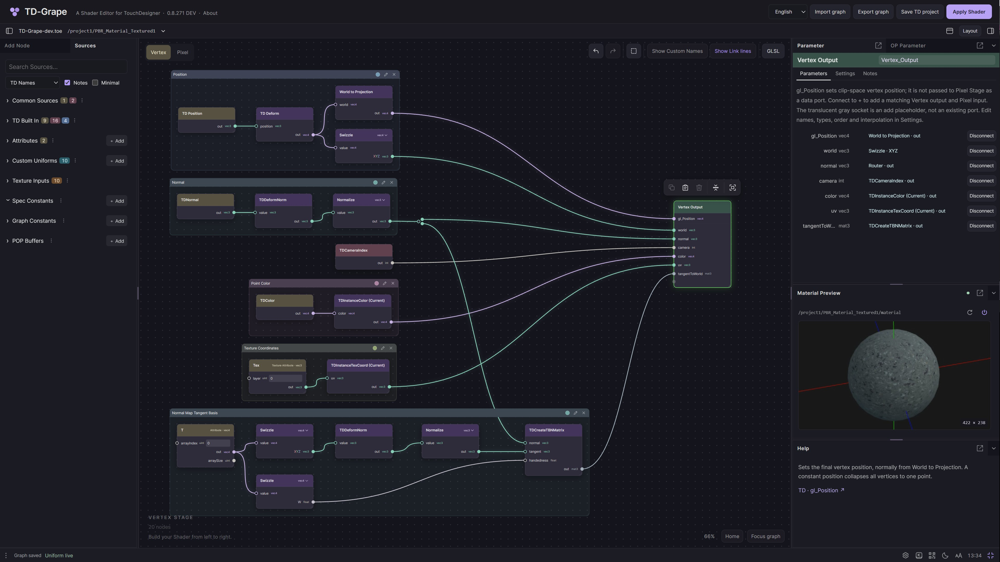
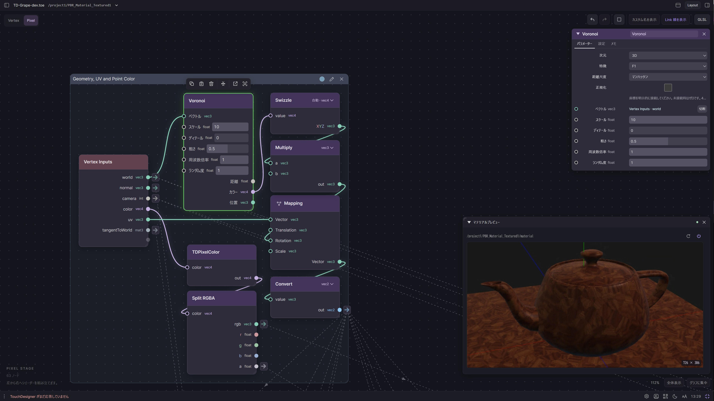

三顆圓點，保留原來的關係
TD-Grape
直接依目前產品可見 SVG 重現：viewBox 64×64，三圓半徑 11；中心 (20,23)、(44,23)、(32,44)。圖標 28×28 CSS px、文字間距 8px。不是三個等距字元或單一圓點。
這是 Legacy UI／UX 設計模式參考。將既有節點、面板與編輯手感如實交接，供人類審查、供實作者理解。新產品依新架構已具備的能力做取捨，不要求照搬本頁的配置或 HTML 結構。
現況參考、保留要求、新增候選分開看。
每一組稿都標明保留意圖、可調整部分、證據與缺口。明確要求保留的設計仍須保留；配置參考可按能力調整。新增候選不冒充已完成的產品，圖冊也不表示 S13 已交付全部能力。
圖冊的結構，不是重構架構。
HTML、SVG、示範互動只用來表達視覺與操作效果。正式實作仍由重構方依既有契約完成。
本頁完全離線。互動只改本頁示例，不連線 TD、不修改 Graph、不保存產品偏好。重構 Repo 保持唯讀。
左邊找能力，中間建構，右邊調整與觀察。這個空間關係值得保留；工具入口可以配置，不把像素座標寫成架構。
完整工作區：依 Legacy 配置重組的 1360 × 780 設計畫板。節點內容是縮減示例；上方宿主路徑、Save TD project 與底列只說明 Legacy 外觀，不表示新產品文件由 TD 持有。
直接依目前產品可見 SVG 重現：viewBox 64×64，三圓半徑 11；中心 (20,23)、(44,23)、(32,44)。圖標 28×28 CSS px、文字間距 8px。不是三個等距字元或單一圓點。
實測：分隔帶 6px；中央線 1px／#30303b；把手 2×28px／#625a70，橫向對調。上方整體配置也呈現。此處是外观樣本，沒有假装提供拖曳調整。
以下是同一 live Canvas 透過縮放選單量得的畫面密度，樣本按 CSS px 重繪。縮小時切換 world 間距，避免點陣越縮越密；點的半徑也隨縮放調整。它提供空間參考，不代表節點必須吸附到每個可見點。
25%／50%／100% 都量到 24px 螢幕間距，但 world 間距分別是 96／48／24；170% 是 40.8px。已驗離散樣本，切換門檻、拖曳平移時的相位、DPR 與其他 theme 還未完整驗證。其餘圖稿的網格只作構圖背景，不可反推演算法。
亮度與 Style：白色圖冊襯底會改變深色 UI 的視覺感受；請以整個深色 workspace 與歷史原圖比較。此輪不重配色。家族／OP Type 色未來可拆為較飽和的角色色與疊加 body 的表面色，這是後續 style 方向，尚未指定疊色公式、透明度或新色碼。
CANVAS OPERATIONS · VIEW, SELECTION & GESTURES
畫布操作要讓使用者始終知道：現在移動的是觀看位置、選取範圍，還是節點本身。這章以相同的節點、接線與選取語彙，交接 Pan、Zoom、框選、節點移動，以及 Home／Frame／Focus 的行為。
SOURCE-DERIVEDSTATIC ILLUSTRATIONS 以下是依 Legacy 原始碼整理的靜態圖解，尺寸與位置為說明用途；沒有可執行手勢，也不代表產品回歸測試。完整規則與證據界線見 Canvas interaction specification。
Pan、Zoom、Home、Frame 重新安排眼前的觀看範圍。節點在圖中的位置與接線保留。
綠色輪廓表示哪些節點被選中。主要選取是目前操作的焦點；它不是新增的一種節點狀態色。
拖曳節點的可移動區域，先顯示預覽。正常釋放後，實際改變的位置才成為一次可 Undo 的佈局編輯。
兩者都會讓節點在螢幕上移動，但結果不同。Pan 讓整張圖與網格一起移動；節點拖曳只移動目前選取，線的端點隨節點更新。
接口空心／實心沿用本圖冊已指定的「連線狀態」語意，Input 與 Output 相同；不是方向的區分。此圖未加入新的控制列或節點樣式。證據：graph_ui.js:96–135, 2401–2420。
在畫布捲動滑鼠滾輪時，縮放圍繞游標所在位置進行。圖中的節點變大或變小；使用者指著的同一個圖中位置，留在同一個畫面位置。
Dolly 保留按下時的錨點；不是用中鍵平移。比例上下限與較低倍率的 Overview 受目前設定控制。本圖的 75%／125% 是兩個示意倍率，不是限制值。證據：app.js:1420–1422, 1570；graph_ui.js:2352–2384, 2543–2549, 2584–2592。
一般點選會取代選取。按住 Shift、Ctrl 或 Cmd 點節點，可將該節點加入或移出選取。
新加入的節點成為主要選取；移除時，主要選取改為選取集合最後一個仍保留的節點。拖曳已選節點時，該節點成為主要選取，整組仍一起移動。
主要選取影響目前的檢視與導航焦點。本章不額外設計另一種 primary 邊框；選取綠框也不改接口或接線的型別色。
框選方向不切換命中規則。Legacy 的滑鼠與 Touch 框選，都是「節點的顯示矩形與選取框相交就選入」，包含碰到邊界。下面兩個方向的結果相同：完整在框內的 A 與只重疊一部分的 B 都選中，框外的 C 不選中。
Shift 可啟動框選；單靠 Shift 不會保留先前選取。滑鼠框選釋放後，以選取集合最後一個成員作為主要選取，不保證是游標最接近的節點。框選的是節點顯示矩形，並非只看中心點。證據：graph_ui.js:1435–1442, 2409–2420, 2602–2604, 2671。
拖曳過程先讓使用者看見新位置，正常釋放才完成編輯。取消時回到這次拖曳開始的位置；取消不應被當成一次已完成的移動。
確認拖曳的節點與整組選取。尚未移動時只是按下，不產生位置編輯。
節點與接線跟著手勢更新。整組使用同一個吸附位移，先看見結果，尚未完成此次佈局編輯。
正常釋放且仍可編輯時，有改變才完成一次編輯。Undo 可還原；回到原位的拖曳不新增位置變更。
Escape、指標取消／失去擷取、視窗失焦或尺寸改變，會還原此次位置預覽。
03A 與 03B 是互斥的結束方式，不是依序執行。此圖只描述一般畫布上的節點移動；拖到垃圾區或資料庫的結果另有規則。
拖曳開始時可能改變主要選取或選取集合；還原位置不表示一併還原拖曳前的選取。使用者應看見兩種狀態的差別。
中鍵 Dolly 在 Escape、指標取消、失去擷取、失焦或視窗尺寸改變時，只在圖、當前子圖 scope、圖層與 UI scale 仍相同的情況還原開始視角。滾輪中斷 Dolly 則結束目前 Dolly。
Touch 取消框選會回復開始時的選取。滑鼠的 pointercancel 分支只清掉手勢與框，不明確還原選取；不能把兩者都宣稱為完整 rollback。
此時間線不是所有手勢共用的保證。一般 Pan、滑鼠框選、Touch、接線與欄位各有取消條件，完整區分見 Canvas interaction specification。本圖不模擬事件擷取、裝置中斷、Host 或 History。證據：graph_ui.js:96–135, 2359–2384, 2420, 2553–2567。
三個入口解決不同的觀看問題。Home 立即調整到全圖；Frame 使用獨立動畫設定，目前預設開啟、333 ms；Focus 切換畫布專注模式。它們不執行節點排列。
依目前圖層的全部節點調整觀看範圍。Home 是命令名稱；這裡的快捷鍵是字母 H。
優先框住目前選取的節點；沒有選取節點時改看全部。它不建立 Group Frame，也不改節點位置。
切換Canvas focus mode，讓畫布取得更多工作空間；同一組快捷鍵切回。瀏覽器全螢幕是另一個入口。
快捷鍵在圖的操作範圍內使用。輸入文字、IME、選單／對話框或進行中的手勢會阻擋部分圖命令；不同命令的實際條件依規格逐項列出。Escape 不會離開 Focus；以同一個 Focus 入口切回。本索引不在圖冊中攔截快捷鍵。
圖中小視窗是功能示意，不指定面板位置或新工具列。Home／Frame 依目前節點與完整包含的群組框範圍取景，取景倍率上限 100%；最低倍率限制可能使很大的圖仍超出畫面。空圖不變。證據：app.js:827–855, 1469–1481；selection_ui.js:92；graph_ui.js:2433–2468。
Source-derived：本章只讀 Legacy 的 src/editor/graph_ui.js、app.js 與 selection_ui.js，據此整理滑鼠 Pan、錨點縮放、Dolly、節點選取、雙向交集框選、節點拖曳，以及 Home／Frame／Focus。可交接的完整行為與證據指向見 CANVAS_INTERACTION_SPEC.md 與 Canvas navigation evidence 005。
Bounded live observation：CANVAS-LIVE-005 另記錄一次有界的 Pan、游標錨定、單選／加選、兩方向部分相交框選、Frame、Home、Focus 與節點拖動／Undo／Redo。這些樣本支持相應行為，不把未做的裝置與取消矩陣標為通過。
視覺語意：延續既有深色 Cool 節點、型別色接口與線、綠色選取輪廓；接口空心／實心採本圖冊指定的未接線／已接線規則。虛線舊位置、箭頭、十字、Primary 註記與時間線都是圖冊註解，不是新增產品控件。
Artifact-only：這些靜態 SVG 沒有載入產品資料、套用 UI 設定或接收真實手勢。圖冊檢查只能確認章節結構與圖稿完整性，不建立 CEF、觸控板、觸控、筆、瀏覽器縮放或不同 UI scale 的操作通過證據。
後續實機驗證：需驗證不同縮放與 UI scale 的錨點／命中、阻尼過程、跨畫布邊界與遮罩、失去焦點／指標擷取、選取與編輯 guard 的連續操作。特別保留滑鼠框選取消與 Touch 取消之間的來源差異，不以統一示意取代證據。
角色標題、克制的 body、貼邊 socket、細小型別字、內嵌值與選取光暈，共同形成現在的辨識度。這些關係需要一起保留。
角色標題。Math #43345C、Output #38524A、Vertex Inputs #62414F。這是角色色，不是接口型別。
2名稱 → 型別 → 值。LIVE-005 再核對：標題12/16 px、padding 12×13；接口列11px、型別9px、一般列29px、有值列30px。圖冊放大方便審查；不把 graph-space 當螢幕尺寸。
3Socket 貼邊。本輪改為未接空心、已接實心；label 保持可讀，結構型別的低彩度漸層用在 socket／線，不套到文字。
4操作與焦點。選取框、欄位編輯與錯誤不是同一狀態；範圍、焦點與名稱不能只靠顏色猜。
5保真界線。重繪用實測 token 與局部 DOM 度量；它不是 pixel-perfect 產品截圖。實際 glyph、全部節點型態與縮放曲線尚未全面校準。
下方可切換 Dimensions／Feature：只示範 O02-03 已觀察的接口差異，不執行 Voronoi、不模擬完整型別推導或 Undo。
Link 的線型與箭頭導航是兩項配合的能力；正常線淡灰、箭頭仍提示型別。下一章可以試點箭頭，並查看全部快捷規則 → 結構型別漸層仍保留在真正需要的型別提示，這裡不再額外佔一欄。
Wire 保留型別色與曲線；Link 用淡灰虛線降低視覺負擔，接孔旁的箭頭把導航留在節點身上。線的顯示、關係的存在與節點選取，是三件不同的事。
同一輸出：2 Link ＋ 1 Wire
普通 Wire：不在 Link 導航集合
局部图解：來源箭頭會選取 Normalize、Length；Multiply 不包含在內。這裡以綠框表達目的地，不執行真正的 Canvas Frame／平移。
| 入口／動作 | 真正的作用範圍 | 結果與狀態邊界 |
|---|---|---|
| 左鍵 Link 接孔箭頭 | 該接孔直接相連的 Link 對端；不包含 Wire，也不遞迴追蹤。 | 選取並 Frame 全部對端，重複節點只列一次。輸入端前往來源、輸出端前往目的地。 |
| 右鍵 Link 箭頭 → 某個項目 | 該接孔的 Link 對端清單；摺疊節點則為該側各接口的集合。 | 選取並 Frame 單一對端。每項保留分類色線、節點名稱與可用的自訂名稱；接口資訊在箭頭 tooltip。 |
| 右鍵 Link 箭頭 → All to Wire | 這個箭頭代表的 Links。 | 只轉為 Wire；不斷開關係。一次 Undo。唯讀／失效目標不能改圖。 |
| 選取一條或多條 Edge → ← / → | ← 所有來源、→ 所有目的地；依資料方向，不依螢幕左右。 | 去重後選取並 Frame；不改接線。文字編輯、modal、其他 gesture 期間不搶按鍵；修飾鍵不觸發這個快捷。 |
| X / Show Link lines | Link 線及其 hit area；Wire 不受影響。 | 隱藏線仍保有連接與箭頭導航。瀏覽器偏好，不進 Graph Undo。輸入欄／dialog／gesture／按鍵 repeat 有 guard。 |
| Edge 選取浮動工具列 | 目前有效的選取 Edge；也支援多選。 | Wire / Link、前往來源、前往目的地、Disconnect。顯示形式與關係刪除分開；工具列是能力入口。 |
| Edge 右鍵 → Source → all Link | 同一來源的同一輸出孔的 outgoing edges。 | 不是整個節點、也不是向下游遞迴。一次 Undo。 |
| Node 右鍵 → Convert wires | 選取節點直接 incoming 或 outgoing 的 edges。 | Inputs→Link/Wire、Outputs→Link/Wire，四項。空集合／唯讀時禁用；不走遞迴。 |
Link arrows Always、Input arrow hover 反向、Wire quick actions、Frame wire endpoint，都是目前開啟的實驗入口。箭頭永遠顯示的模式以箭頭中心作 Link 端點。
Hover / Hidden 可調整線顯示時的箭頭；線一旦隱藏，箭頭仍出現。Hover 模式保持線端點不跳動。入口可以另行配置，不能因此失去導航能力。
摺疊節點會聚合該側 Link 對端，混合型別以箭頭漸層提示。這個真實型別提示仍保留；本輪拿掉的是舊比較稿中獨立的「Structure gradient」欄位。Hover 不得偷偷顯示被隱藏的線。Input 箭頭 hover 反向是導航提示，不代表反轉資料流。右鍵「選來源／目的地」是否 Frame 可受偏好控制；Link 箭頭與上述 ←/→ 本身仍會 Frame。
Wire / Link 樣式跟圖保存，轉換可 Undo；只改顯示樣式不改 GLSL 運算意義。選取／Frame 是視圖行為，隱藏線是偏好。更多证據與未驗範圍：LINK-EVIDENCE-004。
GROUP FRAME · VISUAL ORGANIZATION
Group Frame 是有名字、顏色與明確成員的視覺群組。它讓使用者一起選取、移動與整理節點；線仍直接連到原來的節點，框沒有輸入／輸出接口。
SOURCE-DERIVED 以下規則由 Legacy 原始碼與既有測試內容整理；協作主代理另觀察到 Pixel Output 框的標題、更名、色點、移除框與角落選取入口。手勢細節仍標為 Source-derived。圖中樣式為局部重繪，互動只發生在本頁。
同一張圖上的視覺組織。成員仍可個別選取、移動與接線；移除框會留下節點和線。
Create group frame Ctrl / Cmd + G把可提取的節點與內部連線放進另一張圖，建立 Input／Output 與呼叫節點。這是一個改變圖結構的獨立操作。
Selection to subgraph Ctrl / Cmd + Shift + GFrame color
Custom… · 色彩面板見該章節試著拖曳框的標題列。Float C 雖然位於框內，仍會留在原地。
圖冊操作：點節點選取，Shift／Ctrl／Cmd 加選；點框標題選全部成員，拖曳標題一起移動。框標題雙擊／F2 可更名，Enter／失焦提交，Escape 取消；色點開啟本頁預設色。上方文字按鈕與狀態說明是圖冊輔助控件，不是重新設計產品工具列。示範有可視範圍限制；未模擬 Canvas pan／zoom、接線操作、Host 或完整歷史。接口填色沿用本圖冊方向：已接線實心、未接線空心；不是 Legacy 的方向填色規則。
| 能力／效果 | Legacy 入口參考 | 顯示與配置的界線 |
|---|---|---|
| 建立、加入、移出視覺群組 | 選取工具列／Graph actions；Mod+G、Alt+Shift+G、Alt+G | 工具列位置可配置；可用性仍取決於選取與明確目的地。 |
| 選取成員、一起移動 | 標題列；Enter／Space 選取。右下角另提供選取快捷入口。 | groupCornerSelect = true 是原始碼預設；關閉只隱藏角落入口，不刪除標題列選取能力。 |
| 更名、換色、移除框 | 標題列 pencil／色點／×；雙擊或 F2 更名。 | 名稱和色彩屬於框。換色不改成員節點的型別色。Custom 共用 RGB 色彩面板。 |
| 看清群組與目前選取 | 框有自己的邊界；選取系統另畫多選框與工具列。 | hideGroupedSelectionBounds = false 是原始碼預設；開啟時只在恰好完整選取一個框時隱藏重複的多選框。 |
| 批次收合／展開節點 | 既有 Selection Collapse／Expand 與 Graph actions。 | selectionCollapseTools = true 為原始碼預設；這是成員節點能力，不新增 Frame 收合狀態。 |
| 保留與搬運群組標示 | 文件保存；完整成員 Copy／Paste；提取 Subgraph。 | 複製全部成員才附帶 Frame；部分複製不附帶。完整 Frame 可隨成員進入 Subgraph，仍只在所屬圖顯示。 |
以上預設值是本輪讀到的 Legacy 原始碼，不是這台瀏覽器目前偏好或新產品預設的推定。可配置入口不等於可刪除已要求保留的能力；本章不指定新架構或命令 API。
Observed / UI-advertised：LIVE-001 的快捷鍵對話觀察（第 53–63 行）列出 Frame、Join、Detach 與 Subgraph 提取；協作主代理另回報 Pixel Output 框的可見控件。入口可見不等於所有手勢已驗證。
Source-derived：Legacy src/editor/frames_ui.js：成員／bounds 9–19、建立與 membership 23–63、移除／選取／更名 178–202、拖曳與取消 202–235、顯示與鍵盤 243–273。functions_model.js 8–49：所屬圖、排他成員與完整複製；functions_ui.js 277–307：Subgraph 提取。行號、快照版本與不依賴 Legacy 倉庫的事實摘錄，見 GROUPS-004 證據記錄。
Existing test source：test_group_frames.cjs、test_group_membership.cjs、test_note_group_geometry.cjs 與 test_graph_frames.py 包含 layout Undo、取消、唯讀、成員轉移、編譯不變、clipboard 與 scoped frame 檢查；本輪只讀其內容，沒有把它們當作新執行的 PASS。
本頁互動範圍：示範明確成員、自動範圍、標題移動、選取、Join／Detach、名稱／預設色、移除框、成員收合、只讀與本頁 Undo。只在記憶體中變更，重整即重置。
尚待實機驗證：不同縮放／UI scale 的命中與字級、Touch／筆、焦點離開與 Canvas 操作的完整取消序列、顏色選單的邊緣位置、完整 clipboard／Subgraph 往返，以及實際工具列配置。多框 Join 的平手規則只有來源與既有測試內容證據，本頁只有一個框；不據此增補拖入自動加入、跨圖群組、巢狀框或 Frame 專屬折疊。
NODE ARRANGEMENT · POSITIONS, NOT PANES
排列改變選取節點的位置，保留它們的大小、值與接線。這章交接現有能力、操作入口與可選設定；不涉及工作區面板佈局。
SOURCE-VERIFIED · e005f08 行為依 Legacy 原始碼核對；視覺是 dark / Cool 語彙的重繪，非實測像素。互動僅改此頁的有限示例，不連 Graph、Host、儲存空間或網路。
六種對齊、水平／垂直等距、格狀排列、兩種自動排列，以及多選框的間距拖曳。
排列至少 2 個節點；等距至少 3 個。選取工具列的 Arrange、圖的右鍵選單，以及 L／Shift + L。多選框邊緣另有八個間距控制點。
入口共用同一套排列能力，不是不同的演算法版本。浮動工具列與常態多選框目前預設開啟，屬於交接必須保留的基準。關閉、僅複選等模式是使用者選項。
設定改變入口的呈現，不移除排列能力。選取工具列跟隨選取範圍，優先放在上方；空間不足時放下方，再限制在畫布內。Arrange 只在複選時出現。
圖的右鍵選單也提供 Arrange 子選單。關閉浮動選取工具列後，原有選取工具回到畫布上方；鍵盤命令仍保留。
輸入文字、IME、開啟選單或對話框、正在拖曳／接線，以及唯讀或忙碌時不執行排列。Ctrl / Cmd + L 留給瀏覽器。
Frame 是另一件事。F／Frame 改變觀看範圍；Arrange 移動節點並可 Undo。不要把兩者混成同一種 Layout 功能。
證據：selection_ui.js:72–89, 106–175, 394–440；graph_ui.js:2438–2465, 2932–2951。Arrange 及全部 11 項命令的 SVG 路徑摘自現有程式；選單圖示沿用 style.css:445 的 16 px、1.75 線寬與圓角筆畫。圖稿尺寸與選單間距是重繪。
兩種方法都維持左至右的資料流。差異在層級的起算方向：由結果排列時，短支線會靠近使用它的節點。本例只有 Short source 的層級改變；Note 沒有接線，排在下方。
由來源排列。圖例座標已由 Legacy 純排列函式計算核對。
只處理目前圖層的選取節點。只有兩端都在選取內的接線參與自動排列；未選節點不移動，也不作為避障物。
依實際節點尺寸留空隙；相互獨立的連通區塊分開上下排列。邏輯接口順序參與減少交叉，折疊節點仍沿用該順序。
循環先合併為排列層級單位，避免演算法卡住；這不代表 Shader 循環變成合法。未接線節點在下方依圖內順序排成可換行的區域。
此固定圖例不接受任意圖資料，並未重做產品演算法。來源／結果兩組座標來自 selection_ui.js:266–363 的原函式；同層垂直空隙 48、層間 96 graph units（GRID=24）。「減少交叉」不保證零交叉，也不保證避開選取外的內容。端口填色沿用本圖冊的 connected solid / disconnected hollow 方向，並非 Legacy 實測結果。
四張不同尺寸的佈局卡，用來直接觀察位置規則。這些卡不是新的節點種類。綠框表示選取，未選卡的位置會保留。
Before：選擇操作後 Apply。所有操作只移動圖例卡片。
左／右／上／下以整批選取的邊界為準，置中以整批外框的中心為準。另一個方向的位置不變；沒有額外自動防重疊。
依目前 X 或 Y 位置排序。空隙至少 48 graph units；第一張不動，空間不夠時最後一張會向外延伸，並非固定兩端。
依原本 Y、再 X 排序；每列欄數為節點數平方根向上取整。每欄用該欄最寬卡、每列用該列最高卡，再留 48 的空隙。
公式依 selection_ui.js:365–392，僅用於此四卡範例。Undo 是圖冊的一格本地回復，不存取產品 History；相同位置不增加示例操作。示例保留原比例與可捲動視窗，不把縮放視角當成排列結果。
既有多選框有八個控制點。拖曳時改變節點中心的間隔，再把相反側外緣固定住；不縮放每張節點。以下用圖冊滑桿代替拖曳右側控制點，方便比較。
節點尺寸不變，左側外緣固定。
收緊時停在第一次新增碰撞之前，最多保留原有空隙中的 8 graph units；本來已經重疊的卡仍可向外拉開。產品拖曳只有放開時記錄一次修改；Esc、失去焦點、縮放或選取內容改變會取消預覽。
間距公式：selection_ui.js:179–227。產品手勢與取消：228–263。八個控制點：418–420。本頁滑桿是說明控制器，不是新增的產品 UI 或新的快捷鍵。
| 設定／能力 | 目前預設 · 必須保留 | 可選配置及界線 |
|---|---|---|
| Selection toolbar | Single and multipleselectionToolbar: 'all' | Multiple only 保留上方編輯工具；Off 把選取工具移回上方。Arrange 一直需要複選。 |
| Always show multiple-selection outline | OnpersistentSelectionBounds: true | 關閉後只在操作選取工具列時顯示。開啟時即使浮動工具列關閉，多選框仍可出現。 |
| Hide selection outline for a group | OffhideGroupedSelectionBounds: false | 選用 On 時，選取剛好等於一個完整 Group Frame 才隱藏框及其控制點；部分或多組選取沿用一般規則。 |
| Edit toolbar / Selection collapse tools | On / OneditToolbar / selectionCollapseTools: true | 既有相鄰功能與入口也須保留；不是排列公式的開關。折疊／展開不屬於本章的排列動作。 |
預設值證據：graph_ui.js:2；呈現依設定：selection_ui.js:106–160。以上是此版本的預設，不宣稱使用者目前儲存的瀏覽器偏好必然相同。此表不可操作，不寫入設定。
完整自含紀錄：arrange-evidence-004.md。行號以 Legacy commit e005f08 為準；本章未修改或重新驗證產品。
已核對能力、命令、預設值、公式、取消與 History 接入。選單實際大小、觸控碰撞區、各種 UI scale 的重疊，以及極大圖的排列品質，需在產品環境另行 review；這些不由離線圖冊的互動測試代替。
PANELS · DISCOVERY & INSPECTION
尋找、引用、檢查、看結果，是不同的工作。以下沿用 dark / Cool 的視覺語彙，將各個入口獨立展開；不以共同外觀合併它們的權限或資料。
REFERENCE COMPOSITION LIVE-001–004 · 控件文字為英文，圖冊說明為繁中。所有操作只改此頁的示範狀態；不連 Graph、Host 或檔案系統。
搜尋與來源篩選可操作；選結果只顯示說明，不加入節點。此精簡清單不是完整 Node catalog。選取底色與 SVG 是 reconstruction；不額外加選取描邊。下拉用實心三角，勾選狀態另表達；12–16px 圖示尺寸為圖稿推定，非實測。
暫時查看中間值。只在圖冊中查看資訊，不建立節點。
LIVE-004 O04-03：All types 與 vec3 的空 query 都先列 Preview。此處保留 filter、結果與 detail 的分工；無全域 Tab 攔截。
Tags 分辨來源分類，不替代 data-type color。上方為Legacy 結構示意，底色未核準；header 的中性 #2E2C3A 是候選，不是實測 Uniform 圖卡底色。先前把 badge 的 teal 擴成整條 header 是錯誤外推，已移除。Uniform 圖卡必須簡化，不外推其他 Sources。
一列先呈現名稱、型別與引用入口；需要時再展開值。這是候選形式，不是已批准 layout，也不改變 Uniform／Host value 的權限。Teal 只留在已量測 Source Tag；名稱、數量、值均為示例，展開只是圖冊 view state。
型別、預設值、linked source 分開呈現。本輪 owner 提案：已接實心、未接空心，Input／Output 一致，待 review。方向仍由位置／label 辨識；invalid 狀態另表達。Disconnect 值只是圖稿樣本，不是 Legacy default。
Another browser has taken control. Connect again to take control here.
圖冊沒有 live frame，不會接管任何 Host。Two-sided edge weight:
1 - abs(dot(normalize(Normal),
normalize(View Direction)))Inputs must share a coordinate space. Useful for rim masks and color variation.
Help 跟隨自己的 target；上述是既有節點說明摘述，不因 Viewer offline 而變成錯誤。Locale、target 與 runtime state 不是同一件事。
O03-02 看見 takeover，但未測兩 client 仲裁。Offline 是圖稿狀態，不是本輪 runtime 驗證。Preview Viewer 與暫時 Preview Node 是不同能力。
OVERLAYS · THREE DIFFERENT JOBS
Canvas 浮動內容、可移動設定視窗、一次匯出任務。先區分 target、背景互動與關閉結果，再談共同 Widget 與樣式。
INTERACTIVE DRAFT以下移動、開關與遮罩僅說明圖稿。它們不驗證 Legacy focus trap、close guard、Host writes 或 persistence。
圖稿不是新 production Panel contract。正式 close／retarget／draft／dispose 仍依既有架構；本頁沒有 Graph、History、publication 或 runtime truth。
05 / PARAMETER & FIELD
保留產品既有的行內數值欄位、分量與連線來源。下方是實機局部參考與狀態對照，不另造大型數字框、獨立 Slider 或 Apply／Cancel 數值面板。
Unconnected Connected Input / Output 共用狀態規則
Legacy 對照： Input hollow Output solid
此處採浮動 Parameter 的內容底色 #2E2C3A；側欄容器底色 #1B1B23 是另一種配置。保留 dark / Cool 的欄位底色、24 graph-space px 高度語彙、型別與 source label。已連接 Vector socket 依 owner-proposed 方向畫實心，local socket 空心；此差異不是 Legacy 觀察。局部重繪與分量配置示意非 screenshot，也不是全部 spacing 的像素規格。來源跳轉與 Disconnect 是不同動作。
Local 與 linked 的區別是產品語義；這組並列的 badge、錯誤色與文字配置是提案。Invalid 不應悄悄覆蓋 committed value，Host actual 也不能被偽裝成另一份 Graph truth。
Uroughness · Float / 1
Host 的 Customize Parameters 樣本。不是 generic Node Widget 已有同一套配置的證明。
06 / SHARED COLOR EDITING
共用色彩面板已在功能預覽版 0.8.273 交付。這份本地圖稿同步其呈現與提交規則：Uniform 即時更新，常數保留草稿至 Apply；RGB／RGBA 語意決定是否出現 A。
選擇下方示範型別，比較同一面板的兩種呈現。這是圖冊的檢視控制，不是產品裡讓使用者隨意改變 Parameter 型別的按鈕。
常數草稿：Apply 才改模型值。
#RRGGBB · 6 位 HEX#RRGGBBAA · 8 位 HEX，完全不透明也保留 FF。以上是圖冊控制。可在面板內改色，再點外面、Apply 或 ×，觀察本地模型值。Uniform 的 ×／Escape 還原整個面板開啟前的值；常數的 ×／Escape／外部點擊取消草稿。
面板已關閉。可從左側重新開啟。
本頁使用獨立的本地模型示範已定案的 Apply／取消／即時規則；重新整理會還原，滴管只顯示入口。沒有連線 TD，也不模擬 Host CAS、receipt 或 Undo。Legacy 0.8.273 的產品證據為 39 項單元、35 項瀏覽器、6 項 TD 驗證，與本圖稿的本地檢查分開記錄。
色彩面板設計與互動說明 · 機器可讀索引 · 實際執行的檢查
畫面需要說清楚「哪件事出了問題」與「目前保留了什麼」。以下為既有契約的 UX 候選呈現，不是已完成的 failure runtime 測試。
Node name must be a non-reserved GLSL identifier.Vertex / Array[i] · 定位入口依目前版本有效性提供
Graph/default 0.5
Host actual 0.8
外部控制已變更。圖的 Undo 已完成；Host 值未覆寫。
Selection is no longer available.
原選取的 nested occurrence 已失效。保留說明並停止輸入；不自行跳到另一個同名物件。
行為參考：Taken over by another page
清楚提供重新連線／取得控制的入口。這個狀態與離線、編譯失敗不同。
Connect / take control · 示意を<br>編集，不逐字硬切。132px 是既有樣本寬度，不是全語言固定規格。允許按鈕增高或調整可用寬度，不用縮小字體掩飾問題。其他語言的斷句仍需相同原則的人類 review。點開原始解析度比較。它們是 owner 提供的歷史截圖，不是本輪圖冊或當次操作的截圖。


LIVE-005 量測可見 DOM／computed styles；另透過產品縮放選單比對網格密度，最後回到 Home。沒有讀 legacy source 或改圖內容；網格的離散樣本不等於整個縮放曲線已驗收。測量補充見 evidence.json。ATLAS-004 另對 Group、節點排列與 Link 做了限定範圍的唯讀來源核對，各章附獨立證據紀錄；這與 LIVE-005 的純 DOM 量測分開。舊版顏色可能與目前 Cool profile 不同，歷史截圖不覆蓋明確量得的來源。
先評視覺結果與操作意圖。每列對應一個圖稿範圍；審查紀錄只留在此頁記憶體，可下載 JSON 帶往下一輪，不會寫進重構 Repo。
| 範圍 | 審查判斷 | 你的備註 |
|---|---|---|
| 畫布平移／縮放／選取／拖曳與取消 | ||
| 整體工作空間／Minimal／Focus | ||
| Node 保真與 socket 新方向 | ||
| 動態接口與連線提示 | ||
| Link＋箭頭導航與快捷 | ||
| Group 成員規則／外觀／操作 | ||
| 節點排列／對齊／等距 | ||
| 搜尋／Sources／Inspector | ||
| 數值與分量排版 | ||
| 三種浮動／對話行為 | ||
| 精簡色彩面板／Uniform 與常數提交 | ||
| 例外狀態與多語言 |
尚未儲存審查紀錄；重新整理頁面會清空。下載後的接受／修改意見由人類決定，不會自動變成架構契約。